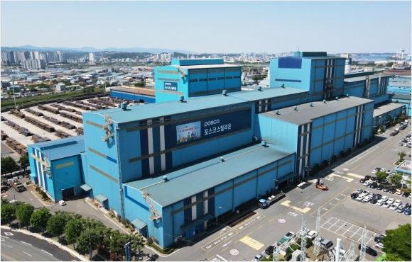
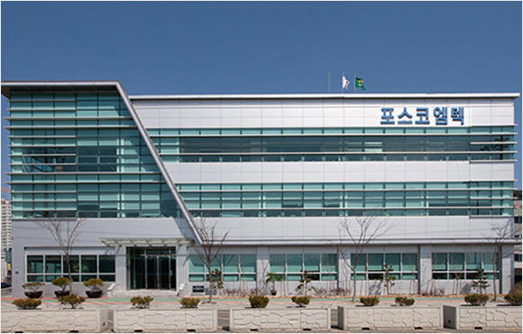
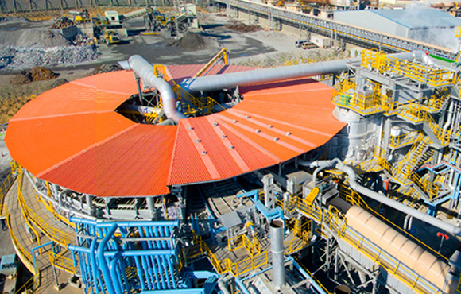

| 포스코스틸리온 | 포스코스틸리온은 1988년 설립된 포항도금강판을 모체로 하여 1999년 컬러강판 제조사인 포항강재공업과 합병하여 현재의 도금/컬러강판 제조 기업으로 성장하였습니다. 알루미늄도금강판, 알루미늄-아연합금도금강판 등과 다양한 디자인과 색상의 컬러강판인 인피넬리(INFINeLI)를 생산하는 표면처리 전문기업으로 발돋움하고 있습니다. 자동차, 가전제품, 건축재 등에 사용하는 알루미늄도금강판, 알루미늄-아연합금도금강판, 컬러강판을 주력으로 ‘Steel design & solution global top company’ 기업을 추구하고 있습니다. |  |
| 포스코엠텍 | 포스코엠텍은 1973년에 철강원료 및 철강포장 전문기업으로 시작하여, 포스코 및 해외 사업장에 철강부원료 공급과 철강포장에 관한 작업을 수행해오고 있습니다. 포스코엠텍은 축적된 기술력을 바탕으로 비철금속 제련 및 합금철 등 소재사업 영역을 개척하여 철강산업과 시너지를 창출하고, 자원재활용 사업을 통해 친환경 글로벌 소재전문기업으로 성장해나갈 것입니다. |  |
| PNR | PNR은 일본제철이 RHF(Rotary Hearth Furnace, 회전로상식 환원로) 기술을 이용한 조인트 벤처 설립을 제안하고, 포스코가 이를 받아들임으로써 2008년에 설립된 포스코의 출자사입니다. PNR은 제철소 제선 및 제강공정의 집진 더스트와 수처리 슬러지 등 제철부산물의 재활용으로, DRI(직접환원철, Direct Reduction Iron), HBI(열간성형철, Hot Briquetted Iron)를 생산하여 POSCO 포항·광양 제철소에 공급함으로써 저탄소 녹색 성장과 그룹ESG 경영의 중추적인 역할을 수행하는 제철부산물 자원화 전문기업입니다. |  |